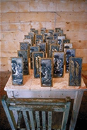
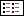

|

Still Life with Herring (detail)
|
Human Nature
About the Exhibit
July 16 - September 5, 1999
Minnesota Artists Gallery
A German transplant to Minnesota’s Arrowhead Region, Frank Sander
has learned that, if connected to nature, a person can live very simply;
and through simplicity comes freedom. "One Earth, one chance"
is the eco-imperative that links his philosophy with his work.
Human Nature features three main architectural components—Fishhouse,
Bathhouse and Beaverhouse—each a distinct, symbolic, sensory experience
that reflects the artist’s belief that the environment must be our
primary issue if we are to survive.
Fishhouse speaks to the container of time and the socialization of
the human soul. Its roof is an ash and beeswax-coated boat, overturned
and held high by four strong timbers. From the roof, Sander suspends
365 resin-encased, smoked herring—each representing a day of the
calendar year.
Beaverhouse comments on our calculated, often ruthless exploitation
of nature. Its form is built around a log frame of poplars felled by
beaver. Underneath it sit 70 government-issue file cabinets, each drawer
containing a beaver skull. The skulls were discovered at a remote woodland
site, where a long-ago trapper had tossed them.
Bathhouse is more hopeful in its suggestion that we can find our way
back. Under the structure’s roof—an aquarium containing live
fish—is a chair standing in a small reflecting pool, which, to
the artist, signifies human consciousness.
Frank Sander’s work is made possible, in part, by the support of
the Duluth Art Institute.
Human Nature is presented by the Minnesota Artists Exhibition Program,
an artist-managed curatorial department of The Minneapolis Institute of
Arts.
Events
Opening reception
Thursday, July 15, 7-9 p.m., free
Artist-led Tour
Sunday, August 1, 3 p.m., free
About the Artist
Frank Sander was born in Hamburg, Germany in 1949. He studied architecture
at
Hamburg’s Fachhochschule fur Bauwesen and fine art at Hochschule
fur Bildende-Kunste. In 1978, he moved to the United States, where he
has lived in Duluth, Minnesota, since 1990. He is recognized throughout
the region for his environmentally sensitive public art.
Sander combines his skills in carpentry, architecture and fine art to
produce environmentally sensitive structures and sculpture. His commitment
to a healthy "leasing" of the Earth is apparent in virtually
everything he does, from designing passive solar homes to building the
prototype for a worm composting greenhouse.

Other Exhibits
|